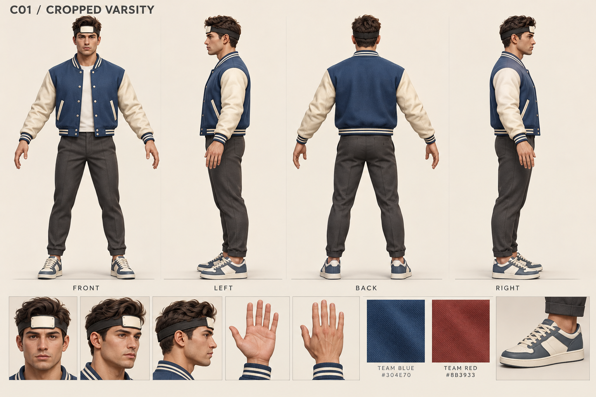
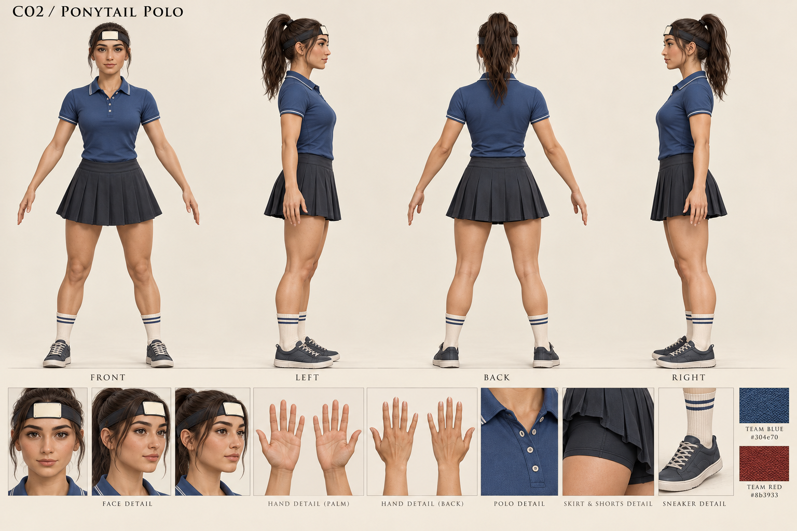
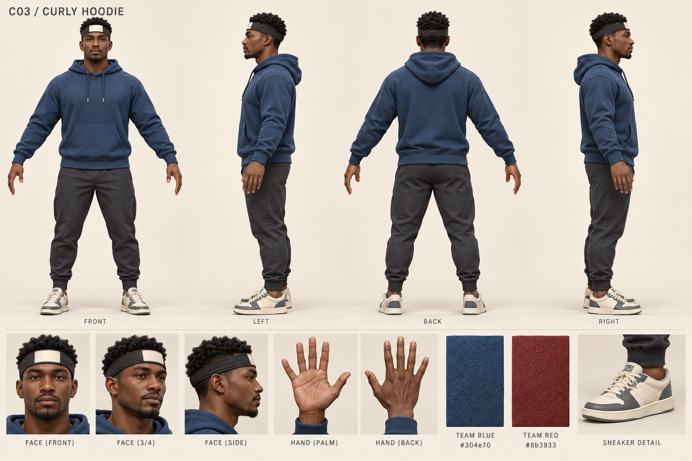
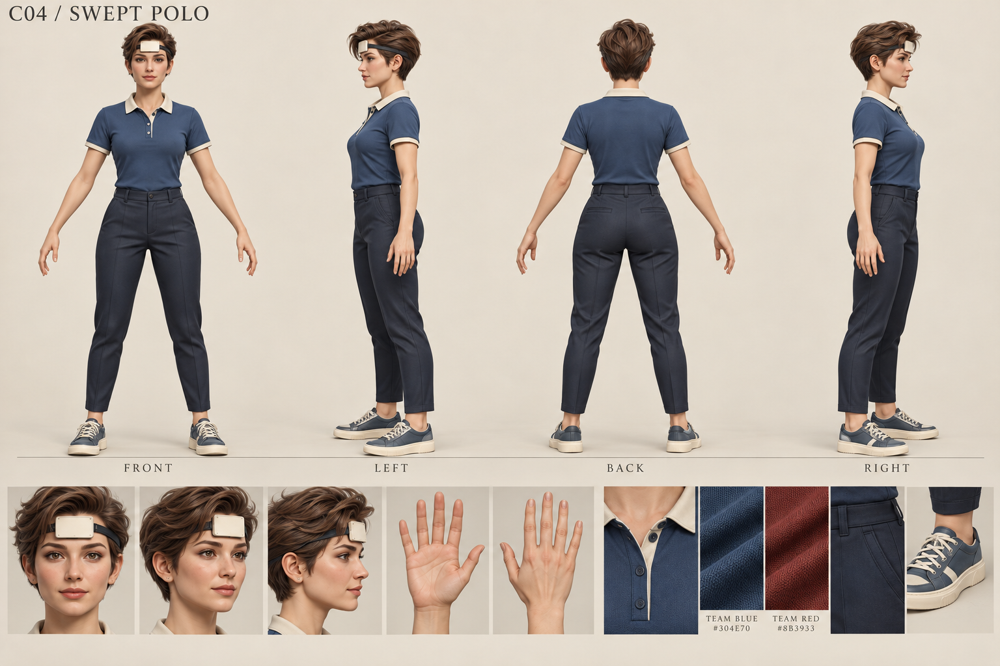
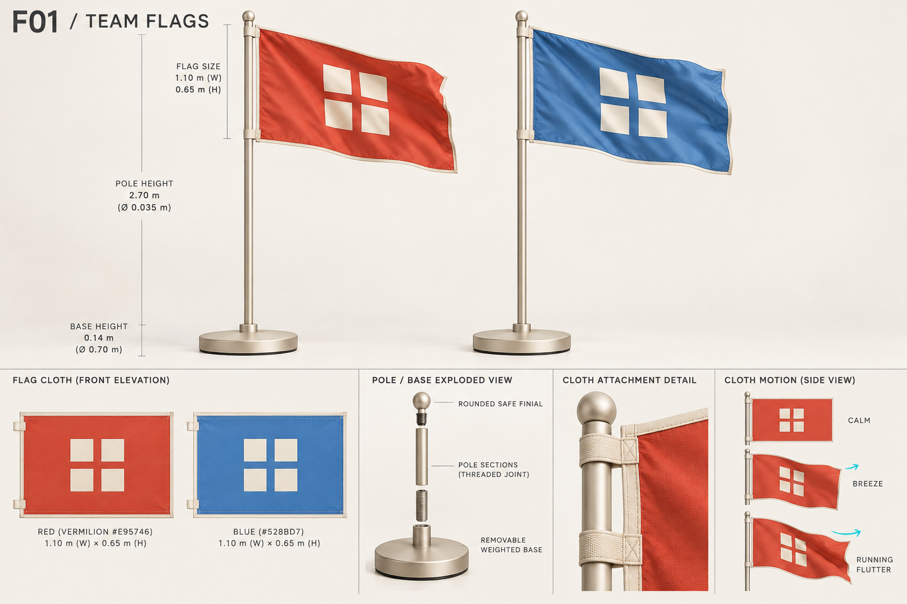
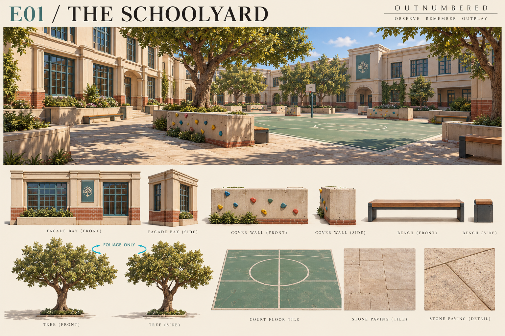
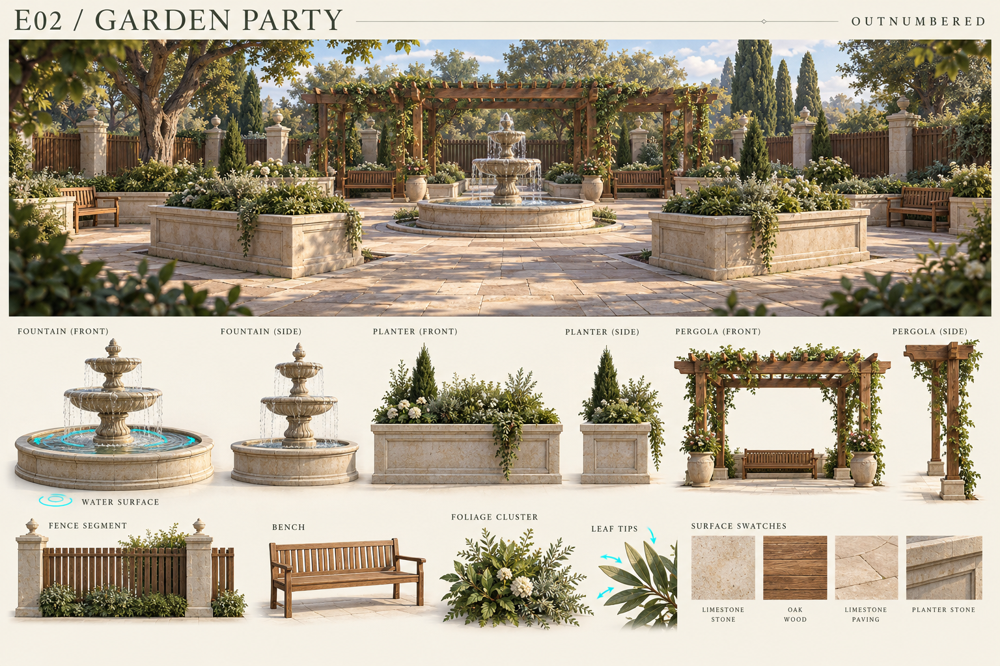
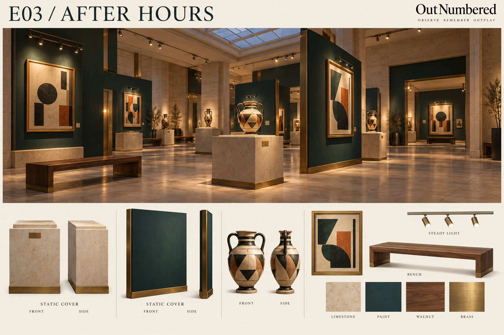
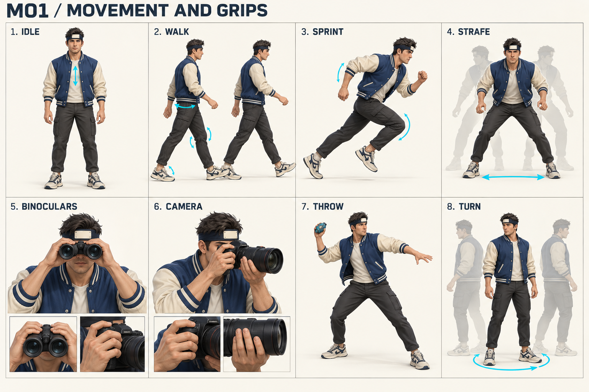

Nine reference boards for the next modeling stage: four adult character designs, paired team flags, three environment kits and shared movement guidance.
Concept references, not implemented 3D assets. Written specifications override image dimensions. In particular, enlarge forehead displays to the gameplay measurements and correct the flag radius/diameter labels.








